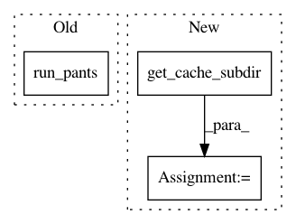

0bbe913f1c67f298b3191ed51498b20144536888,tests/python/pants_test/backend/jvm/tasks/jvm_compile/java/test_java_compile_integration.py,JavaCompileIntegrationTest,test_java_compile_produces_different_artifact_depending_on_java_version,#JavaCompileIntegrationTest#,60
Before Change
"testprojects.src.java.org.pantsbuild.testproject.unicode.main.main")
config = {"cache.compile.zinc": {"write_to": [cache_dir]}}
pants_run = self.run_pants(self.create_platform_args(6) +
["compile",
"testprojects/src/java/org/pantsbuild/testproject/unicode/main"],
config)
self.assert_success(pants_run)
// One artifact for java 6
self.assertEqual(len(os.listdir(artifact_dir)), 1)
After Change
]
self.assert_success(self.run_pants(java_7_args, config))
java_7_artifact_dir = self.get_cache_subdir(
cache_dir,
other_dirs=[java_6_artifact_dir],
)
main_java_7_dir = os.path.join(
java_7_artifact_dir,
"testprojects.src.java.org.pantsbuild.testproject.unicode.main.main",
)
In pattern: SUPERPATTERN
Frequency: 3
Non-data size: 3
Instances
Project Name: pantsbuild/pants
Commit Name: 0bbe913f1c67f298b3191ed51498b20144536888
Time: 2017-12-19
Author: 1305167+cosmicexplorer@users.noreply.github.com
File Name: tests/python/pants_test/backend/jvm/tasks/jvm_compile/java/test_java_compile_integration.py
Class Name: JavaCompileIntegrationTest
Method Name: test_java_compile_produces_different_artifact_depending_on_java_version
Project Name: pantsbuild/pants
Commit Name: 0bbe913f1c67f298b3191ed51498b20144536888
Time: 2017-12-19
Author: 1305167+cosmicexplorer@users.noreply.github.com
File Name: tests/python/pants_test/backend/jvm/tasks/jvm_compile/java/test_java_compile_integration.py
Class Name: JavaCompileIntegrationTest
Method Name: test_nocache
Project Name: pantsbuild/pants
Commit Name: 0bbe913f1c67f298b3191ed51498b20144536888
Time: 2017-12-19
Author: 1305167+cosmicexplorer@users.noreply.github.com
File Name: tests/python/pants_test/backend/jvm/tasks/jvm_compile/java/test_java_compile_integration.py
Class Name: JavaCompileIntegrationTest
Method Name: test_java_compile_reads_resource_mapping